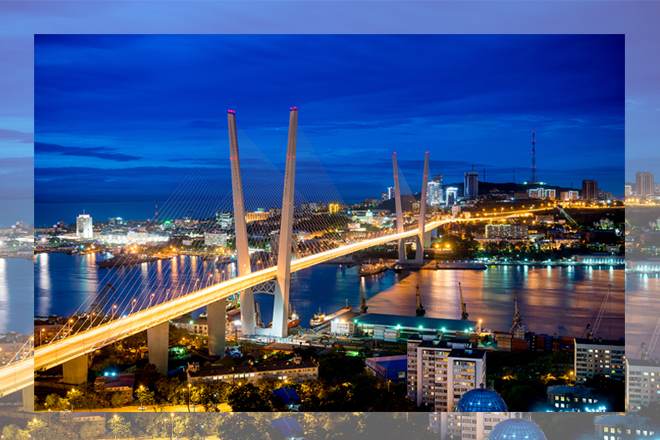

СТОЛИЦА ВЛАДИВОСТОК
Во Владивостоке можно отправиться к историческим памятникам, связанным с военным прошлым: остаткам Ворошиловской батареи и Владивостокской крепости, музею на подводной лодке и на дореволюционном сторожевом корабле «Красный вымпел».
Или пройти с гидом по китайскому кварталу «Миллионка», побывать на настоящей чайной церемонии, прокатиться на фуникулёре к популярной смотровой площадке. Любителям автостарины понравится выставка ретроавтомобилей. Увидеть археологические находки и исторические экспонаты можно в Приморском государственном музее имени Арсеньева. Здесь собрано около 600 тысяч интересных экземпляров, это крупнейшая коллекция в Приморье.
